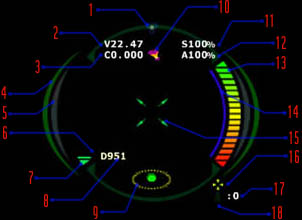

HUDWelcome Pilot. This is Solder Ronin speaking, sectional leader of the TRI Department for Novice Pilot Affairs. Now that you have a working knowledge of flight mechanics and space travel, it's time to begin standard TRI interface training. Once you have familiarized yourself with the HUD, we can move onto something useful... What are you waiting for, recruit?! Get studying! This documentation will guide you through the basic components of the TRI standard heads up display (HUD). You may want to alt+tab between your browser and jumpgate, and experiment with the HUD components. Also, as you read through this information, take note of which pieces of data you think you will use most. Note: you can toggle the HUD state by pressing 'h'. |
| Central Data Display Ring | ||
|
This is the core of the HUD. The CDDR contains nearly every piece of data that a pilot will need. Here are a few examples of the CDDR. You may notice that virtually every part changes depending on your ship's current status.
|
| CDDR breakdown | |||||||||||||||||||||||||||||||||||||||||||||||||||||||||
|

|
| RWM Bar | ||
|
The RWM bar, or radar/weaponry/mission bar, consists of just that: radar statistics, weaponry statistics, and mission statistics. The following sections will help you to familiarize yourself with the standard RWM bar.
|
| Radar Readout Breakdown | ||||||||||||||||||||||||
|
| Weapon Readouts |
|
Vital to any pilot who may be (intentionally or unintentionally) engaging in battle, these display points will tell you what guns and missiles you have equipped. By pressing 'g' you can toggle your active weapon, and by pressing 'n' you can toggle your active missile. |
| Mission Status |
|
The mission status section of the RWM bar displays remaining mission requirements, if any exist. For more information on mission requirements, see the missions overview readout. |
| Standard Comminications Display |
|
This section of the HUD is visible at the top of your screen, and contains communication and system messages relevant to you and your ship. For more information on communication, see the communication resource page. |